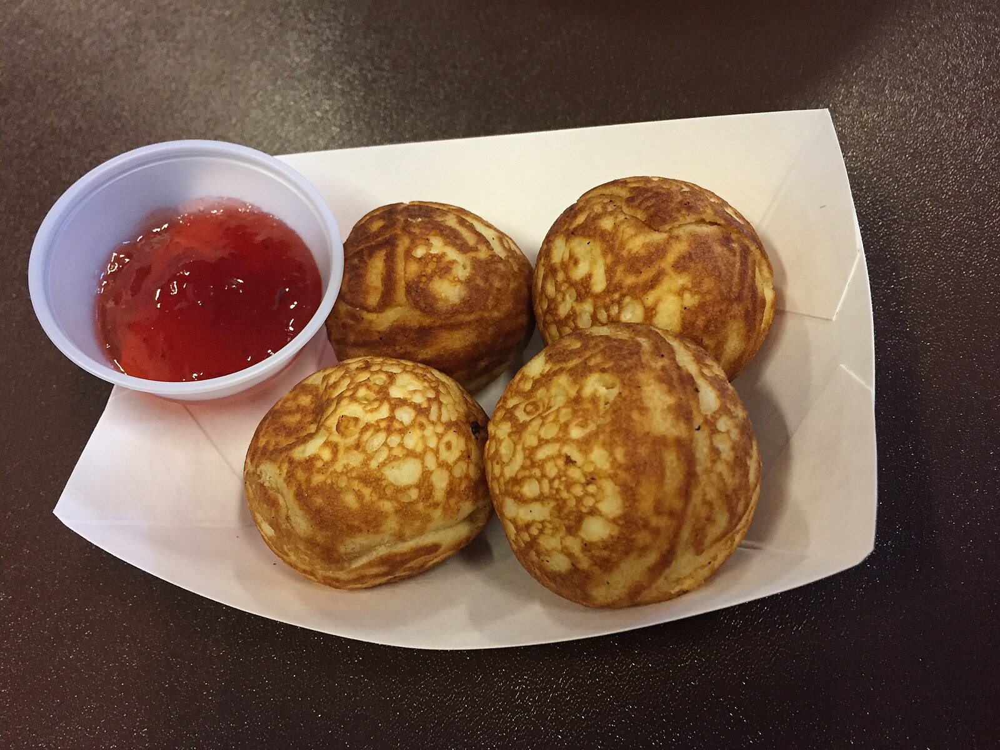

Dansk Aebleskiver (Danish Doughnut)

Description
This is a recipe of the traditional Danish donut, and the author's family favorite affair, a type of spherical donut often served warm, dusted with powder sugar, and with a side of jam.
Ingredients
- 8 eggs
- 1 quarter Buttermilk
- 1/4 cup melted butter
- 4 cups all-purpose flour
- 1 teaspoon salt
- 2 teaspoons white sugar
- 1 teaspoon
- 1 1/2 tablespoons ground cardamom
- 2 cups vegetable shortening, melted
Steps
- Preheat an electric aebleskiver pan, according to the manufacturer's directions.
- Beat together eggs, buttermilk, and butter in a mixing bowl until smooth. Gradually whisk flour, salt, sugar, baking soda, and cardamom into egg mixture until evenly blended and smooth.
- Spoon 1 tablespoon of shortening into each cup of the preheated aebleskive pan, and allow oil to heat. Pour batter into each cup until 3/4 full. Allow batter to cook in the bottom of the cup, 3 to 4 minutes or until golden brown. Then use a long skewer or knitting needle to lift one edge and give it a 1/4 turn. The uncooked batter will spill over into the cup, and cook. Continue lifting and turning the edges until batter is fully cooked into a golden brown ball. Drain on paper towels.
Return